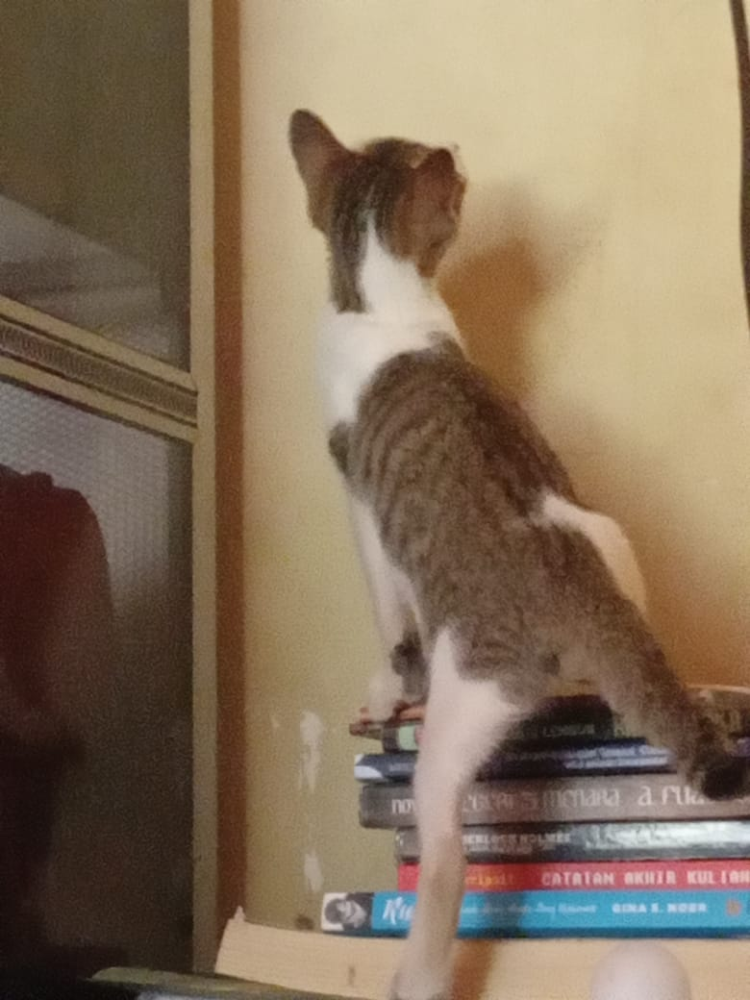
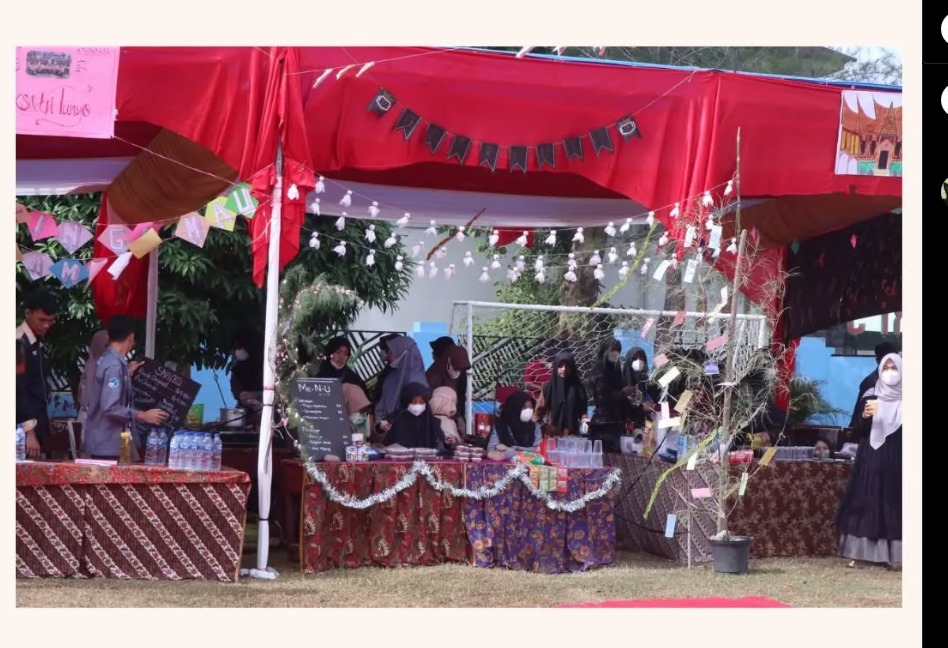
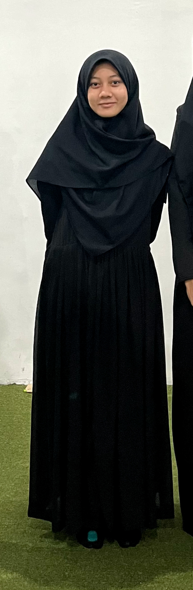
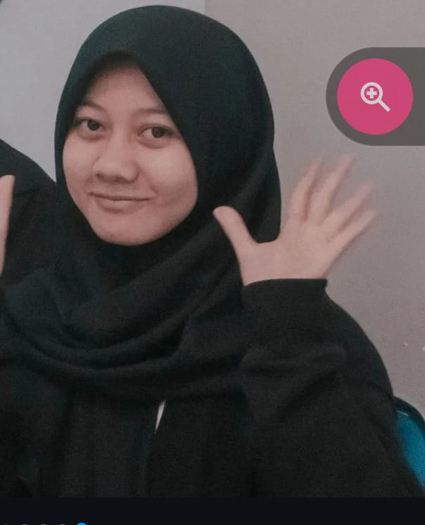
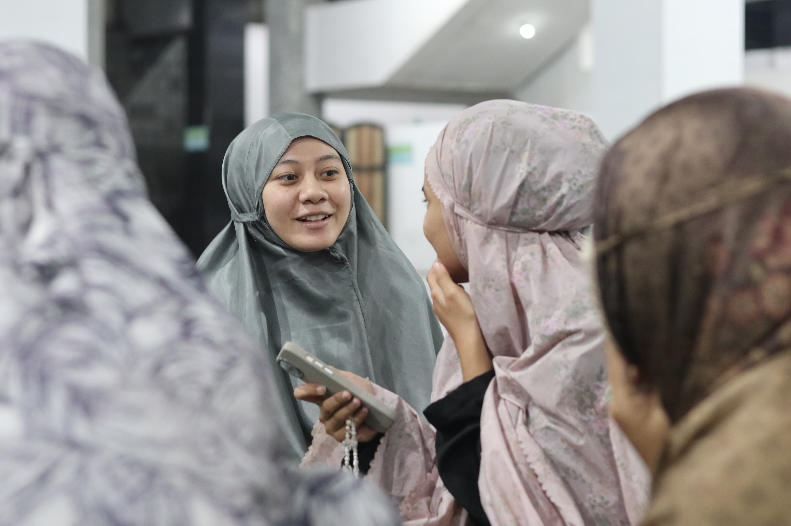
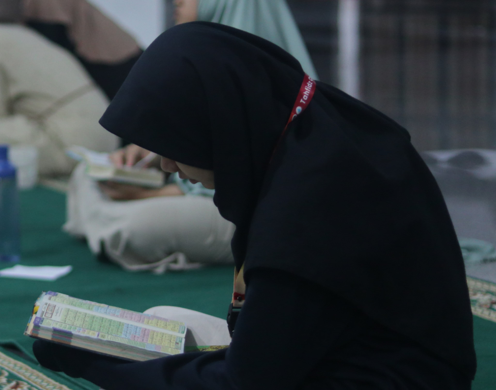

Siapa nama kucing Rifa?

cih, oke itu kegampangan. Acara apa ini, dan itu siapa yang lagi jaga stand?

hanya untuk Rifa. Pembuatnya ingin hanya Rifa yang bisa melihat isinya
buat bocil yang udah 20 tahun
Hi Rifa, apa kabar?
wow 20 tahun...
agak sulit dipercaya kalau aku pertama kali ketemu kamu itu waktu kamu masih 18 tahun, dan sekarang kamu udah 20 tahun, kepala 2. ihhh udah dewasa adikkuu
aku pingin bikin sedikit archive buat setahun kebelakang, paling nggak dari perspektif yang bisa aku lihat. Sejak kita pertama ketemu dan sampe sekarang satu tahun kemudian. Jadi aku buat web mini ini buat kamu
aku cuma berhasil ngumpul foto segini aja hehe ditambah sama yang di awal-awal tadi, tapi aku coba pilih-in yang paling memorable 👇👇👇
Keanomalian saat semua bermula
First impression-ku tentang kamu seperti yang udah berkali-kali aku bilang ke kamu, aku kira kamu itu orang yang pendiam. Soalnya, ayolah, lihat foto ini. anak baik, manis, tinggi secukupnya ini kelihatan kayak buku pedoman menjadi anak baik. Wkwkwkwk bercanda, tapi beneran rifa baik kok, aku gabakalan ada disini kalo gak begitu.
kocak banget sih kalo inget-inget kamu di Muktamar. Hari pertama, telat, lama lagi (gak telat ya, tapi ngapain malah nongkrong di lantai atas dikk??). Rabes pertama, jadi tumbal divisi buat ikut rapat. D-Day Muktamar, share-screen dan time-keeper yang sungguh anomali. Lihat apa yang Rifa ucapkan setelah Muktamar:
"Halo semuaa, aku minta maaf banget ya atas segala kekurangan yang terjadi selama persiapan maupun hari h acara, makasih banget buat segala bantuannya, sekali lagi maaf yaa all🤍🫂"
awww Rifaa...
hey Rif, makasih ya udah mau daftar Muktamar, aku bersyukur bisa ketemu dan kenal kamu
Cosmos pake C
fast forward sedikit ke Cosmos, aku tau ini adalah antonim dari acara memorable buat kamu wkwkwk tapii... aku cuma punya foto ini hehe (ini aku nemu di ig cosmos), jadi ini foto untuk merepresentasikan kegiatan kamu di semester 3
huh, semester 3 itu kamu banyak juga kegiatan ya gak sih fa? kamu co acara di Cosmos, kamu sempat jadi lo di lkmm-td, kamu well poros, wajar oh iya wajar, wow aku gatau kamu sadar apa nggak, tapi rasanya semester 3 kamu luar biasa sibuk ya.
dan di semester 3 juga kamu diterima beasiswa BSI. Rifa aku mau jujur, ini bukan basa-basi, buatku, kamu itu salah satu perempuan paling hebat yang aku tau. Aku gabegitu dekat sama kamu selama semester 3 kemarin, tapi setiap kali aku dapat kabar tentang pencapaian kamu, ataupun semua kegiatan kamu. Aku bangga. aku bukan siapa-siapa kamu untuk merasa bangga sebenernya, tapi tetep aja, aku selalu bangga sama kamu untuk setiap pencapaian kamu. (Aku lihat story kamu tentang BSI itu aku lagi di kelas dikelilingin temenku, dan aku gabut buka ig, lihat story kamu dan aku reflek teriak "WEH" kenceng banget gaboong, orang-orang ngeliatin aku wkwkwk. Setelah itu aku langsung nyusun long text)
TECE
jingle brawijaya itu masih terngiang-ngiang di kepala-ku ~ bersama raja brawijaya... ~ awas topi kamu copot!
Okei serius, aku ngerasa TC itu awal aku cukup confident untuk menganggap kalo kita berdua itu teman baik. Atau lebih tepatnya, setelah TC sih, karena TC itu kita cuma interaksi sekali waktu kamu minjem pdh-ku. Setelah TC selesai, aku ingat kita sempat chat agak panjang tentang mending kamu pulang sekarang atau nanti pas lebaran aja, disitu aku lagi-lagi salut sama perempuan se-kuat kamu untuk gapulang di saat literally semua orang selain kamu pulang, termasuk aku. Disitu aku janji buat ngebantu ringanin beban kamu sedikit dengan selama liburan aku sering-sering ganggu kamu lewat chat, biar kamu gak kesepian
Dan yang gak aku duga adalah aku gangguinnya malah lewat telepon. Kalo aku ngasih tau diriku sendiri waktu deg-deg-an mau ngobrol sama kamu di rkb "Laks, nanti lu liburan bakalan sering nelpon Rifa dan ngobrol lama", aku bakalan gapercaya dan mungkin kek "woy lu siapa, dan gimana lu bisa masuk kos gua?!" Tapi selama bulan januari itu aku makin kenal kamu, dari sisi yang paling absurd seperti Rifa nyangkut di pohon dan Rifa jatuh di sumur...
Sampai hal-hal cukup serius yang buatku kagum sama kamu, seperti gimana kamu menanggapi beberapa hal yang kamu hadapi di keluarga kamu. Aku yakin, tanpa ragu, kalau keluarga yang Allah berikan buat kamu adalah yang terbaik buat kamu fa, yang baik-baiknya, dan yang belum sempurna. Tapi aku rasa, mungkin ada satu atau dua bagian dari cerita keluargamu yang tidak sepenuhnya menyenangkan. Rif, kamu hebat udah sampai sini, aku bangga sama kamu. Kamu gak sendirian, kamu gak harus ngehadapin semuanya sendirian, kalau sekiranya ada hal yang perlu kamu ceritakan, kamu tau kamu bakal selalu bisa hubungi aku kapan aja.
Untuk Rifa
Hi Rifa, yay udah sampai akhir
Maaf, ini foto-fotonya gabanyak, waktuku habis buat bikin web-nya jadi pesan-nya sendiri waktunya malah jadi tinggal dikit banget
Tapi, yang aku harap, semoga dari yang sedikit ini bisa sedikit ngasih gambaran ke kamu tentang seberapa jauh kamu udah berjalan
Rifa, makasih banyak buat satu tahun kebelakang, aku bersyukur bisa kenal dan jadi teman buat orang sehebat kamu. Tanpa kamu sadarin, aku belajar banyak dari kamu. Se-betapa besarnya gengsi-ku untuk menjadi orang yang bisa jadi contoh baik buat kamu, nyatanya seringkali kamu yang jadi contoh buat aku.
Jadi makasih ya Rifa, udah jadi temen yang buat aku lebih baik sampai saat ini
Dan untuk kedepannya, 20 tahun dan seterusnya, bakalan banyak banget hal yang kamu lalui. Kamu bakal melakukan pekerjaan tertentu dan kemudian ninggalin itu, kamu bakalan ketemu orang-orang dan berpisah dengan orang-orang, kamu bakal suka akan sesuatu kemudian lupa sesuatu itu tadi, pun mungkin kamu akan membenci sesuatu dan kemudian kamu suka dengan hal itu.
Umur 20-an terutama 20-an awal itu umur yang unik, aku udah berpengalaman 2 tahun di umur segini, dan wow, kalo hidup itu roller coaster, umur segini itu bagian hula hoop-nya. Dan di tengah naik-turun-nya hidup kamu selama tahun-tahun ini, aku bakal ada disini, gak jauh-jauh, mungkin gak bakal sering-sering banget ketemu atau interaksi, tapi aku tetep bakalan ada disini. Sambil meniti jalan hidupku sendiri, aku bakalan nemenin kamu.
Banyak hal yang bakalan berubah. Aku harap kita bukan salah satunya
Jadi, closing statement, happy birthday Rifa Qonitah. Makasih udah jadi salah satu teman terbaik aku satu tahun kebelakang. Aku berdoa semoga hal ini gabakal terlalu banyak berubah di tahun-tahun ke depan
P.S. dan aku bakal selalu doa kebaikan buat kamu dan buat semua urusan kamu Rifa. Selalu.
Hafidzhakillah, semoga Allah selalu menjaga kamu